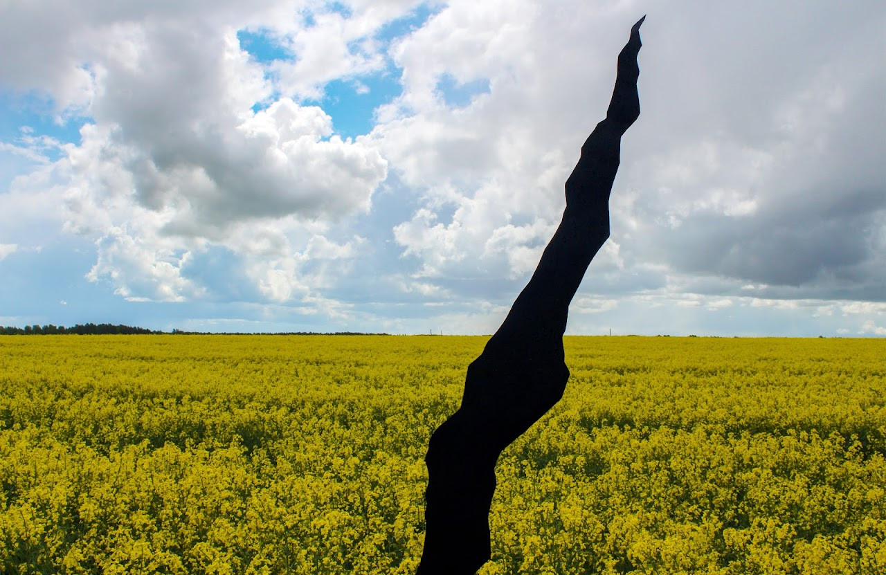

This installation explores how landscapes carry traces of history and human presence.
“We believe that stones and soil keep memory, just like people.”
“The landscape remembers everything.”
The project was created in the Mogrytsia quarry, Sumy region, Ukraine. It continues our research of how fertile land is shaped by human labour, memory, and the transformations brought by war.